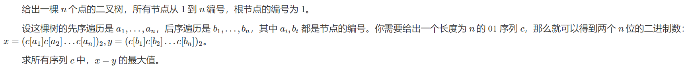
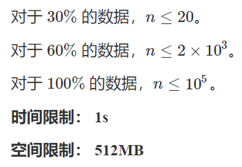
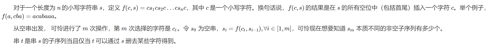
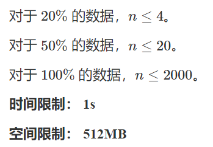
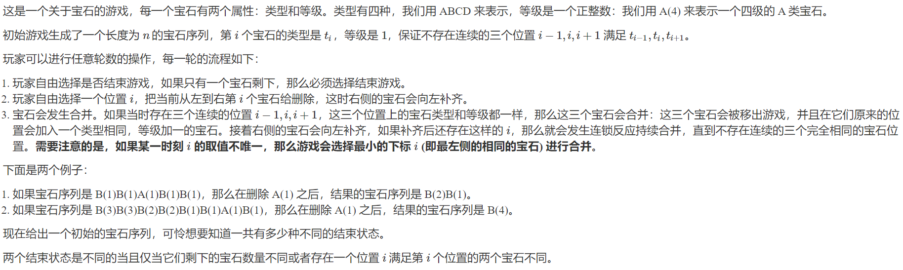
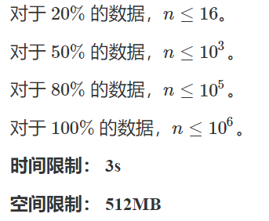

T1 二叉树


首先这个先序和后序遍历没有任何用处，给两个排列都可以
有一种比较显然的贪心是从高位到低位贪心地填$10$，可以证明这样一定最优秀，因为一个位置的贡献一定不会劣于后面任何一位的贡献
然后这个题就没了
T2 子序列


仔细观察最后构造出的串，会发现一个重要性质：如果每次将这个串的中间那个字符抠出来，那么左边和右边是完全一样的串
我们倒序模拟这个过程，每次迭代的时候先接上一个字符，再将上一次迭代的串复制一份接在后面
比如之前的串是$s$，这一次接上的字符是$a$，那么这一次迭代之后的串就是$sas$
由于询问的是本质不同的子序列，那么我们可以设计这样一个状态：$dp[i][j][k]$，表示在第$i$次迭代后，以字符$j$开头，并且可以接上字符$k$的子序列的数量
这里的“可以接上”指的是，在当前串的最后一个选择的字符后面没有字符$k$，这样当这个子序列尝试接上字符$k$时，才能选到新添加的字符
根据$dp$的定义，可以显然地看出转移就是矩阵乘法
现在我们只需要考虑对于一个字符$a$，它代表的矩阵是什么
我们构造$27\times 27$的矩阵，多出的一维代表已经决定在这个字符后不会再选择了，即在后面接上空串
那么当前的字符有两种转移：选择，或者不选
如果在上一次转移的时候已经决定了接上字符$a$，那么在这一次转移中就必须选
否则可以选，也可以不选
代码如下
1
2
3
4
5
6
7
8
9
10
11
12
13
14
15
16
17
18
19
20
21
22
23
24
25
26
27
28
29
30
31
32
33
34
35
36
37
38
39
| #include <bits/stdc++.h>
using namespace std;
const int N = 2010, mod = 998244353;
typedef long long LL;
inline void Inc(int &x, int y) {
x += y, x -= x >= mod ? mod : 0;
}
struct Matrix {
int a[27][27];
Matrix() {memset(a, 0, sizeof(a));}
inline Matrix operator * (const Matrix &b) {
Matrix res;
for (int i = 0; i < 27; i++)
for (int k = 0; k < 27; k++)
for (int j = 0; j < 27; j++)
res.a[i][j] = (res.a[i][j] + (LL)a[i][k] * b.a[k][j]) % mod;
return res;
}
} f[N], base[N];
char s[N];
int main() {
int n; scanf("%d%s", &n, s + 1), reverse(s + 1, s + n + 1);
for (int i = 1; i <= n; i++) {
for (int j = 0; j < 27; j++) base[i].a[s[i] - 'a'][j] = 1;
for (int j = 0; j < 27; j++) if (s[i] - 'a' != j) base[i].a[j][j] = 1;
}
f[1] = base[1];
for (int i = 2; i <= n; i++)
f[i] = f[i - 1] * base[i] * f[i - 1];
int res = 0;
for (int i = 0; i < 26; i++) Inc(res, f[n].a[i][26]);
printf("%d\n", res);
}
|
T3 小游戏


由于统计的是结果序列，因此考虑用类似子序列自动机的方法
抛开等级不管，结果序列一定是原序列的子序列
注意到每种类型的等级一共只有$12$种，也就是说我们最多只有$48$个不同的元素
并且结果序列是不能再合并的，即相邻的类型以及等级相同的元素最多只能有两个
假设我们现在已经枚举好了答案序列，如何判断原序列是否能消出这个序列呢
有一种比较显然的策略是贪心地匹配，即假如当前字符是$c$，等级是$k$，那么就在当前位置后匹配$3^k$个$c$，中间的其它字符都可以删掉
因此我们可以用$dp[i][j][k][0/1]$表示匹配到了原序列中的第$i$个位置，上一次选择的字符是$j$，等级是$k$，并且与上上个元素是否相同的方案数
写出来之后会发现过不去第二个样例
冷静分析之后会发现还有一种情况：相邻的两个元素类型相同，但是前面一个的等级小于后面那个的等级
如果这两个元素合并的字符在原序列中是相邻的，那么我们必须浪费一个当前字符
比如aabaa，最终的序列不能是a(1)a(2)
因为要得到a(2)就必须消掉b，但是这样会导致后面两个a和前面的挨在一起，第二个位置就得不到a(2)了
如果这两个字符在原序列中不相邻，那么我们可以先合并后面的字符，再合并前面的字符，最后把中间的其它字符删除，可以得到答案序列
代码如下
1
2
3
4
5
6
7
8
9
10
11
12
13
14
15
16
17
18
19
20
21
22
23
24
25
26
27
28
29
30
31
32
33
34
35
36
37
38
39
40
41
42
43
44
45
46
47
48
49
50
51
| #include <bits/stdc++.h>
using namespace std;
const int N = 1000010, mod = 998244353;
inline void Inc(int &x, int y) {
x += y, x -= x >= mod ? mod : 0;
}
int nxt[4][13][N], dp[4][13][N]; char s[N];
int main() {
int n; scanf("%d%s", &n, s + 1);
int cur[4];
for (int i = 0; i < 4; i++) {
cur[i] = n + 1;
for (int j = 0; j <= 12; j++) nxt[i][j][n + 1] = n + 1;
}
for (int i = n; i >= 0; i--) {
for (int j = 0; j < 4; j++) nxt[j][0][i] = cur[j];
if (i) cur[s[i] - 'A'] = i;
}
for (int i = 0; i < 4; i++)
for (int j = 1; j <= 12; j++)
for (int k = 0; k <= n; k++)
nxt[i][j][k] = nxt[i][j - 1][nxt[i][j - 1][nxt[i][j - 1][k]]];
for (int i = n; i >= 1; i--) {
int sum = 0, sum2 = 0;
for (int k = 0; k < 4; k++)
for (int l = 0; l <= 12; l++) {
sum = (sum + dp[k][l][nxt[k][l][i]]) % mod;
sum2 = (sum2 + dp[k][l][nxt[k][l][nxt[k][l][i]]]) % mod;
}
for (int c = 0; c < 4; c++)
for (int j = 0; j <= 12; j++) {
int t1 = (sum - dp[c][j][nxt[c][j][i]]) % mod, t2 = (sum2 - dp[c][j][nxt[c][j][nxt[c][j][i]]]) % mod;
if (s[i + 1] == c + 'A')
for (int l = j + 1; l <= 12; l++) {
t1 = ((long long)t1 - dp[c][l][nxt[c][l][i]] + dp[c][l][nxt[c][0][nxt[c][l][i]]]) % mod;
t2 = ((long long)t2 - dp[c][l][nxt[c][l][nxt[c][l][i]]] +
dp[c][l][nxt[c][0][nxt[c][l][nxt[c][l][i]]]]) % mod;
}
dp[c][j][i] = (t1 + t2 + 1) % mod;
}
}
int res = 0;
for (int c = 0; c < 4; c++)
for (int l = 0; l <= 12; l++)
res = (res + dp[c][l][nxt[c][l][0]] + (long long)dp[c][l][nxt[c][l][nxt[c][l][0]]]) % mod;
printf("%d\n", (res + mod) % mod);
}
|